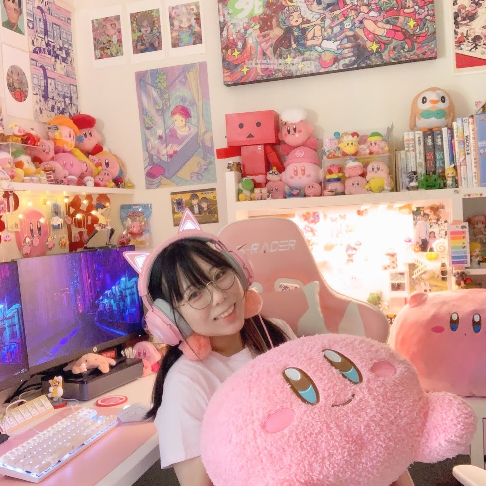

Born in Tokyo, Raised in Califonia.

Miyu Kaneko is an Digital Media Artist (and Kirby lover) from San Jose. After being born in Japan, she moved to California at three months old. With her and her family’s struggle with adjusting to an forgein culture whilst perserving Japanese culture, she adapted an unique art style in mixing American morals and Japanese art-styles. With her struggle to adapt came a strong sense of exploration of self-identity, love for family, and having a curiosity for open conversations about delicate topics of mental health and individuality. She is currently studying Digital Media Arts at San Jose University, she is expected to Graduate fall 2022.
Experienced in Paint tool SAI, Procreate, Processing, P5.js, HTML, Adobe LightRoom, Illustrator, Photoshop, After Effects, Premiere Pro, and a bit of MAYA, Blender, and 3ds Max.
Artist Statement:
Art has always helped me gain a sense of identity. My art is a exploration, self-refletion, and expression of my identity in bi-culturality, compassion, survivor of depression, and creativity. Through self-reflection with and without art, I found that there is a lot of gratefulness to have for the world, even though sometimes life may feel like the most difficult thing to ever endure. Gratefulness to self, others, the environment, and life, are easy to slip our minds as we become so occupied with surviving everyday. Through my art, I hope to explore more about myself, others, and the world, whilst also sharing my thanks and happinesses with others. I hope you feel a bit of warmth in your heart as you interact with my art, the same way I felt warm when creating them.